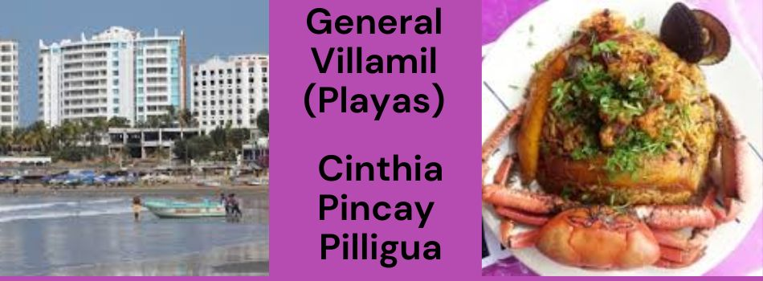
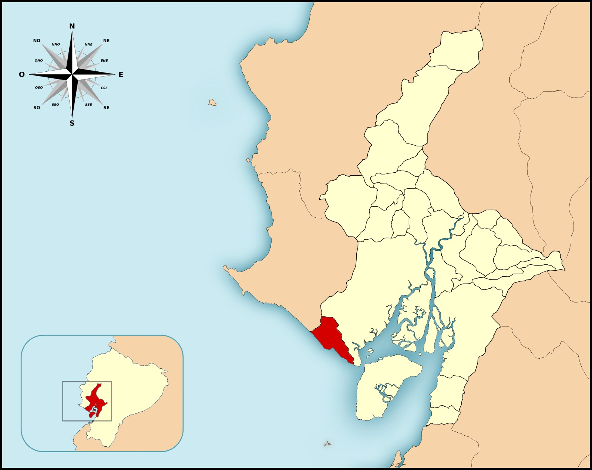

Al turismo de general villamil aprovecha las virtudes climáticas de las playas, como el sol y el viento, para realizar actividades recreativas al aire libre Tomar el sol,Caminar por la playa,Practicar deportes acuáticos,Practicar deportes de playa,Volar un cometa en la playa, Running en la playa,etc. como las condiciones climáticas son de tiempo soleado y temperaturas cálidas (de 28 a 32 °C).
El turismo de las hermosas playa de general villamil playas se pueden dividir en tres grandes grupos de servicios: hospedaje, alimentación y transporte, además del servicio de las agencias de viajes ya que su heremos paisaje es de admira ya que son tan bella su vista y cualquier turista mueres por conocer cada una de sus bellas vistas y su gran gente buena
Flora : es Monte salado, muyuyo, algarrobo de donde se obtiene la afamada algarrobina que es un energético de gran calidad,donde también encontramos sembríos de pitahaya. Fauna :Se puede encontrar una variedad de avifauna como: gaviotas, garzas, pelícanos, albatros, cucube, etc. en épocas llegan a la costa variedad de especies como: lobos marinos, piqueros patas azules incluyendo las ballenas jorobadas. Los delfines nariz de botella, llamados localmente bufeos, residen en los alrededores de Puerto El Morro y Posorja.
 ir a home ir a sitio turistico ir a costrumbre ir a galeria